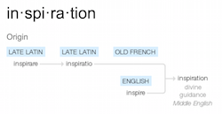
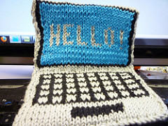

1 Course Philosophy
Increasingly, numerous historical documents making massive amounts of data are being put online. But, once that material is online, we face a question of ‘so what?’ This course will give you the digital research and data management skills and reflexive theoretical grounding to answer the ‘so what’. As digital historian Adam Crymble writes, ‘We’ve spent millions digitizing the world’s historical resources. Let’s work together to figure out what they can teach us’.
This course is about crafting digital history, about data mining documents, about reading distantly thousands of documents at once, about graphing/mapping/visualizing what we find, and working out how to best communicate those findings. It is about writing history in digital media, which are primarily visual media. Thus, we will learn how to scrape data, how to find meaningful patterns within it, and how to visualize (via websites or infographics) those results. Readings will be from relevant literature in the field (mostly open access).
Things will go wrong. Stuff will break. You will be frustrated. This will not be easy, but it will be rewarding if you stick it out.
You won’t have taken a course like this before.
1.1 What do you need to succeed?
This course is not easy. It has no multiple choice tests, no assignments that you can crib via a google search. Rather, it expects you to take responsibility for your own learning, and for you to make a convincing argument showing how you’ve changed as a historian. It requires you to be
- self-directed;
- motivated;
- self-disciplined;
- able to admit to yourself and to others when things aren’t going according to plan;
- able to collaborate with others in a transparent manner, giving credit where credit is due;
- committed to working through in public the problems and potentials of digital history;
If this sounds like you, or someone you are willing to become, then you will be ok.
1.2 On Craftiness
Great art comes from inspiration. Technical skill, yes of course. But ‘inspiration’ - the divine breath. Science? Science requires hard work and graft. Careful observation, attention to detail, replication, routine and method. Carefully record everything, and someone else could (should be able to) replicate it. Yes, there is insight and eureka moments, but we can agree that art and science are at different points along the continuum. So what of craft? I know a man who is astonishingly good at wood working. He will stand there, quietly, while he contemplates a piece of wood. Then, without a word, he begins to work with it. He sees the grain, and can feel how the piece is going to go. The materials can be guided, but they push him as much as he pushes them. The resulting piece can be typed - ‘Oh, you make a shaker-style chair’ - but, in its own quiet way, it is unique.
To my mind, digital history sits in the realm of craft. Maybe digital history is at the midway point on the continuum between art and science. Or maybe ‘craftiness’ is just another axis, and there are a landscape of possible configurations in the x,y,z space of art/science/craft. In any event, there is no recipe I can give you that will enable you to ‘do’ digital history. Sure, I can show you how to topic model, and you can run data through it like grist through a mill, but that’s not to say that the result is meaningful. The craft of digital history lies in knowing which techniques work best with what materials - and in knowing when to go against the grain. It lies in producing sometimes beautiful unique pieces that bring out a greater truth, that stand on their own. At other times, it involves quietly producing the one piece that fits perfectly into the larger argument.
My own practice lately has been blurring between visualization/sonification and sound art. I’m hoping that over the course of this term, you will find your own crafty corner of digital history to call your own. It will change with time, practice, and exposure to digital media and ways of representing the past. What was hard becomes easier (and at the same time, less examined at a theoretical level), the goal posts move, and the latest digital toy appears on the horizon. But you will be equipped to evaluate, incorporate, ignore, as needs arise.
1.3 A question to start with: do I need to be techy?
You do not need to be ‘techy’ to succeed in this course. I know that digital skills come in all shapes and sizes - I grade how far you’ve come, not where you get to. What is far more important than being ‘techy’ is that you are willing to try, and willing to say ‘I don’t know – help?’ I expect you to talk to each other in this class. Share your work. Collaborate. Help each other!
I sometimes talk about ‘failing in public’. That is to say, we talk about and critically examine the things that work, and the things that didn’t. ‘Fail’ in this context doesn’t mean the end of the road: rather it’s just one stage in a productive cycle of learning, experimenting, and community building that makes digital history one of the most exciting fields to work in.
1.4 The characteristics of a Digital historian
Caleb McDaniel, of Rice University, writes that a good historian exhibits skill and nuance in five specific ways (from his HIST118 Rubric):
- Narrativity - they identify and tell the important story, with full regard for its complexity (and issues of change and continuity and causality)
- Evidence - they marshall appropriate evidence to support the story, and understand its strengths and limitations, using the full critical apparatus available to historians
- Empathy - they write with care and consideration for these lives in the past. That is to say, they recognize the ‘why’ of what happens without retrojecting current mores onto actors in the past
- Style - they write with verve and fluidity, grace, clarity and cohesiveness
- Self-reflection - they acknowledge and examine their own perspective vis-a-vis the past and understand (or try to understand) how that is having an impact on the story told.
All historians - all good historians - score well on that rubric. Digital Historians have a few more characteristics that emerge out of our engagement with the digital. Remember, the digital is not a passive place, but is rather dynamic, and emergent at the intersection of both human and non-human actors. We have to be cognizant of the sociology of digital production, and the ways that -for instance- the heavily white male demographic that encodes the tools and platforms make hidden value judgements about what is important. Thus, the characteristics of a good digital historian, in addition to McDaniel’s points, must also:
- Value ‘fail’ - identifying the ways tech and humans ‘fail’ and how we react to these ‘fails’ is a critical issue
- Reproducibility - digital history, unlike ‘regular’ history, is in principle reproducible. How do we deal with this?
- Collegiality - good digital history can not be done in isolation. How do historians learn to play nice with one another?
- Evidence - in addition to the usual questions of historical evidence, the digital historian has to consider how her evidence has come to be digitized. This means understanding not just the technological aspects, but the sociological aspects of knowledge production, software creation, surveillance capitalism, and more.
- Self-reflection - added to MccDaniel’s ideas about self-reflection, the digital historian enjoys a Red-Queen relationship with technology: they have to run faster and faster just to stay in the same place. Technology changes rapidly. Being reflective about digital technology also means reflecting on what one knows and what one does not, and taking active steps to identify and learn whatever technology (and supporting theory) required by the historical question. Thus, the digital historian also engages with current debates about technology’s role in the world through their practice.
The lessons, exercises, and activities in this course are all mapped against these characteristics of being a good digital historian.